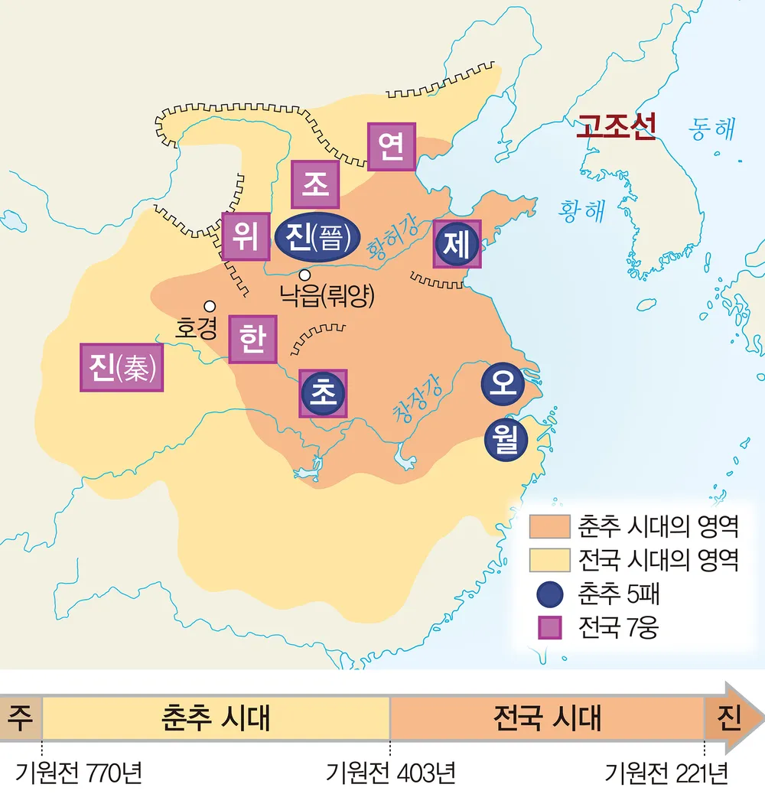
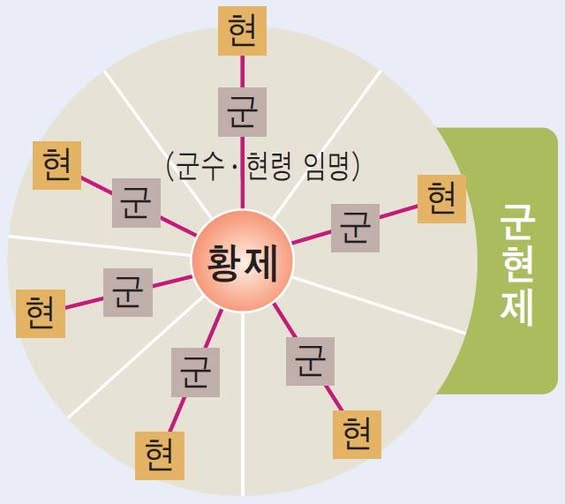
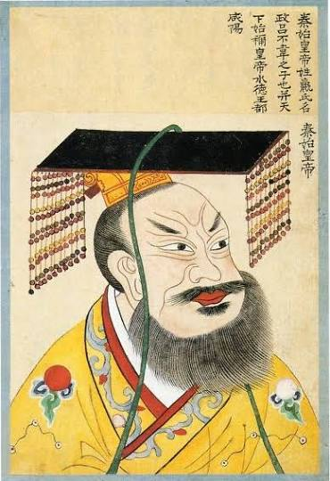
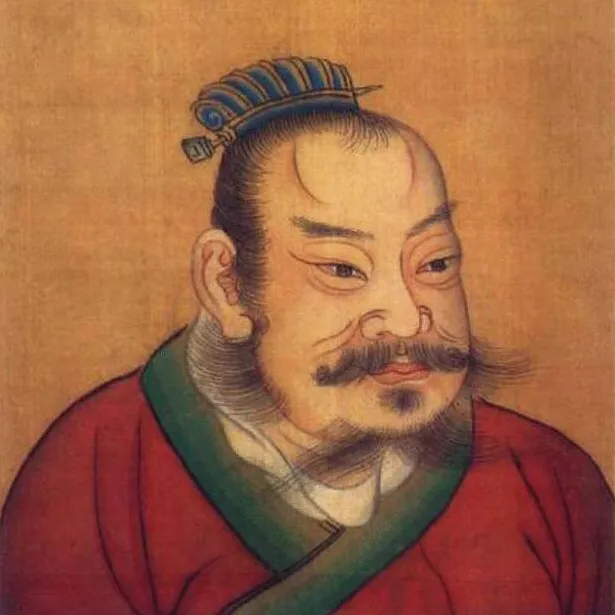
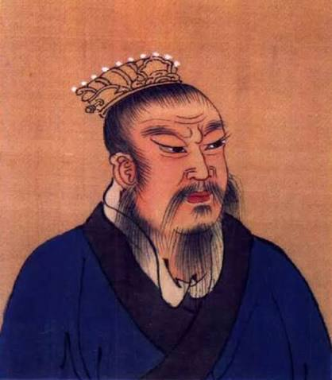
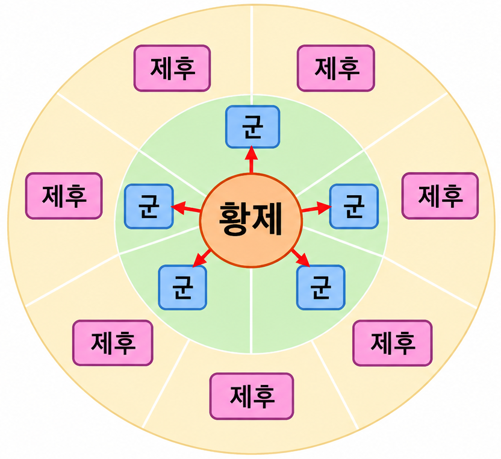

🏯
세계사 · Ⅰ-2. 동아시아, 인도 세계의 형성 — 학습지 7~8쪽
✦ ✦ ✦
교과서 22~25쪽
01. 진, 한 제국
◆
춘추 전국 시대 · 진의 통일 · 한의 발전 · 흉노의 발전
◆
🔄
지난 시간 복습 — 메소포타미아 vs 이집트 문명
| 구분 | 메소포타미아 | 이집트 |
|---|---|---|
| 발생지 | 티그리스·유프라테스강 | 나일강 유역 |
| 지형 | 개방적 → 지배 세력 잦은 교체 | 폐쇄적(사막·바다) → 안정적 왕조 |
| 최고 통치자 | 왕 = 지배자, 제사장 (신정 정치) | 파라오 (태양신 '라'의 아들) |
| 세계관 | 현세 중시 (길가메시 서사시) | 내세적 (사후 세계 중시) |
| 문자 | 쐐기 문자 | 상형 문자 (파피루스에 기록) |
| 역법·수학 | 태음력 · 60진법 | 태양력 · 10진법 |
| 대표 건축 | 지구라트 | 피라미드 (파라오의 무덤) |
| 대표 법전 | 《함무라비 법전》 | — |
🔄
지난 시간 복습 — 인도 문명
🏙️ 인더스 문명
- 기원전 2500년경 인더스 강 상류 펀자브 지방에서 드라비다인이 형성한 것으로 추정
- 계획도시 하라파, 모헨조다로 건설
🚶 아리아인의 이동과 사회
- 기원전 1500년경 아리아인 진출 — 중앙아시아에서 북인도로 이동, 이후 갠지스강까지 진출
- 원주민을 지배하기 위해 카스트제 성립(브라만·크샤트리아·바이샤·수드라)
- 자연신을 숭배하는 브라만교 성립, 경전 《베다》 사용
🔄
지난 시간 복습 — 중국 문명
🌊 하·상 왕조
- 기원전 2500년경 황허강과 창장강 일대에서 문명 발전, 하 왕조(얼리터우 유적)는 문헌상 최초의 국가
- 상 왕조: 왕이 점친 내용을 갑골에 기록하는 신권 정치 실시
- 점친 내용과 결과를 갑골문으로 기록 → 한자의 기원
⚔️ 주 왕조
- 상을 멸망시키고 건국, 왕이 수도 인근을 직접 지배하고 제후에게 나머지 지역을 다스리게 하는 봉건제 실시
- 혈연에 기초한 종법 제도 발전
⚔️
학습지 7쪽 — 1. 춘추 전국 시대 (1) 주의 동천과 전개
◆
1. 춘추 전국 시대
🏰 (1) 주의 동천과 춘추 전국 시대의 전개
- 춘추 시대: 춘추 5패가 존왕양이를 명분으로 제후국을 통솔
- 전국 시대: 전국 7웅이 서로 패권을 다투는 약육강식의 시대
🗺️
학습지 7쪽 — 춘추 전국 시대 지도

📚
학습지 7쪽 — 1. 춘추 전국 시대 (2) 제자백가
◆
1. 춘추 전국 시대
📚 (2) 제자백가
- 등장 배경: 부국강병을 위한 목적으로 벌어진 제후국들의 경쟁
- 사상: 유가(공자, 맹자), 법가(상앙, 한비자), 도가(노자, 장자), 묵가(묵자)
🏗️
학습지 7쪽 — 1. 춘추 전국 시대 (3) 사회의 변화
◆
1. 춘추 전국 시대
🏗️ (3) 사회의 변화
- ① 철기 보급: 농업 생산력 증가, 토지 사유화
- ② 수공업과 상업 발달: 대도시 형성, 화폐 유통
- ③ '사(士)' 계층 출현(신분 질서 재편), 농민 지위 상승
🗺️
학습지 7쪽 — 2. 진의 통일 (통일)
◆
2. 진의 통일
🗺️ 통일
- 기원전 221년, 전국 7웅을 통일
🗺️
학습지 7쪽 — 진의 전국 통일 지도

⚖️
학습지 7쪽 — 2. 진의 통일 (통치)
◆
2. 진의 통일
⚖️ 통치
- 중앙 집권 정책: ➊ 군현제 실시, 화폐와 도량형·문자 통일, 분서갱유
- 대외 정책: 만리장성 축조, 광둥성과 베트남 북부까지 영토 확장
🗺️
학습지 7쪽 — 군현제

🧱
학습지 7쪽 — 만리장성
🧱 만리장성(萬里長城)
- 축조 목적: 북방 유목 민족인 흉노족의 침입을 막기 위해 전국 시대 각국이 쌓았던 성벽을 진시황이 하나로 연결·증축
- 길이: 진시황 당시 축조한 성벽은 총 길이 약 5,000km — 서울에서 인도 뉴델리까지의 직선거리와 비슷한 거리
💥
학습지 7쪽 — 2. 진의 통일 (멸망)
◆
2. 진의 통일
💥 멸망
- 대외 원정, 대규모 토목 공사 → 진승·오광의 난 등 농민 반란으로 멸망
👑
진시황의 최후

🏯
학습지 7쪽 — 3. 한의 발전 (건국)
◆
3. 한의 발전
🏗️ 건국
- 진 멸망 → 한 고조 유방이 건국, 중국 재통일(기원전 202)
⚔️
초한지
항우

유방

⚖️
학습지 7쪽 — 3. 한의 발전 (통치 · 한 고조)
◆
3. 한의 발전
⚖️ 통치 — 한 고조
- 한 고조(유방): 군국제(봉건제와 군현제를 절충) 실시
🗺️
군국제

🌳
한 고조 가족관계도
한 고조(유방)
여후
황 후
유영
척부인
후 궁
유여의
⚖️
학습지 7쪽 — 3. 한의 발전 (통치 · 한 무제)
◆
3. 한의 발전
⚖️ 통치 — 한 무제
- 한 ➋ 무제: 군현제의 전국적 실시, 유교 중시(오경박사 설치, 태학 설립), 대외 원정(흉노 정벌, 고조선 멸망, 장건의 서역 파견)
🔄
학습지 7쪽 — 3. 한의 발전 (후한)
◆
3. 한의 발전
🔄 후한
- 건국: 외척 왕망의 신 건국 → 유수(광무제)의 후한 건국, 신 타도
- 멸망: 환관·외척·관료의 대립, 황건적의 난 등 농민 반란 → 삼국(위·촉·오)으로 분열(220)
📜
한 · 신 · 후한 연대기

🐎
학습지 8쪽 — 4. 흉노의 발전
◆
4. 흉노의 발전
📈 성장
- 기원전 3세기 몽골고원의 유목 지대에서 성장
- 진·한 교체기에 동호를 정복하는 등 세력 확대
📉 쇠퇴
- 한 고조 시기 화친
- 무제의 원정 이후 쇠퇴하여 분열(남흉노는 후한에 복속)
✏️
학습지 8쪽 — 개념 확인 문제 1번
◆
개념 확인 문제 — 1번
괄호 안의 내용 중 알맞은 말에 ○표를 하시오.
⑴
( 춘추 / 전국 ) 시대에는 주 왕실을 받들고 오랑캐를 물리친다는 존왕양이를 명분으로 제후국들을 통솔하였다.
춘추
⑵
진시황제는 전국에 군과 현을 설치하고 지방관을 파견하는 ( 군현제 / 군국제 )를 비롯한 강력한 중앙 집권 정책을 추진하였다.
군현제
⑶
한 무제는 ( 왕망 / 동중서 )의 건의를 수용하여 오경박사를 설치하고 태학을 설립하는 등 유교를 통치 이념으로 중시하였다.
동중서
✏️
학습지 8쪽 — 개념 확인 문제 2번
◆
개념 확인 문제 — 2번
다음 내용과 관련 있는 제자백가를 <보기>에서 고르시오.
ㄱ. 유가 · ㄴ. 법가 · ㄷ. 도가 · ㄹ. 묵가
⑴
인과 예를 중시하였다.
ㄱ. 유가
⑵
'차별 없는 사랑'을 강조하였다.
ㄹ. 묵가
⑶
엄격한 법을 통한 통치를 주장하였다.
ㄴ. 법가
⑷
인위적인 것을 거부하고 자연 상태를 추구하였다.
ㄷ. 도가
✏️
학습지 8쪽 — 개념 확인 문제 3번
◆
개념 확인 문제 — 3번
3
흉노에 대한 설명으로 옳은 것은? ( ⑤ )
① 분서갱유를 단행하였다.
② 남월과 고조선을 멸망시켰다.
③ 소금과 철에 대한 전매제를 실시하였다.
④ 진승·오광의 난 등의 반란으로 멸망하였다.
⑤ 군주 선우가 좌현왕, 우현왕을 두고 분할 통치하였다.
🔄
복습 — 춘추 전국 시대 빈칸 채우기
◆
춘추 전국 시대 복습
- 춘추 시대에는 춘추 5패가 존왕양이를 명분으로 제후국들을 통솔하였다.
- 전국 시대에는 전국 7웅이 서로 패권을 다투는 약육강식의 시대였다.
- 부국강병을 위한 제후국들의 경쟁 속에서 유가·법가·도가·묵가 등 다양한 사상가 집단인 제자백가가 등장하였다.
🔄
복습 — 진나라 빈칸 채우기 (1)
◆
진나라 복습
- 기원전 221년 전국을 통일한 진왕 정은 스스로를 시황제라 칭하였다.
- 진시황제는 전국에 관리를 파견하여 다스리는 군현제를 실시하였다.
- 중앙 집권 강화를 위해 화폐 통일과 도량형 통일을 단행하였다.
🔄
복습 — 진나라 빈칸 채우기 (2)
◆
진나라 복습
- 사상 통제를 위해 책을 불태우고 유생들을 산 채로 묻은 분서갱유를 단행하였다.
- 북방 흉노족의 침입을 막기 위해 만리장성을 축조하였다.
- 대규모 토목 공사와 무리한 대외 원정으로 백성들의 불만이 커져 진승 오광의 난 등 농민 반란이 일어났고, 결국 진은 멸망하였다.
🔄
복습 — 한나라 빈칸 채우기
◆
한나라 복습
- 한 고조(유방)는 봉건제와 군현제를 절충한 군국제를 실시하였다.
- 한 무제는 유교를 통치 이념으로 삼아 오경박사를 설치하고 태학을 설립하였다.
- 인재 등용을 위해 지방관이 향촌의 인물을 추천하는 향거리선제를 실시하였다.
- 물자 유통과 재정 확충을 위해 균수법과 평준법을 시행하고, 화폐를 오수전으로 통일하였다.